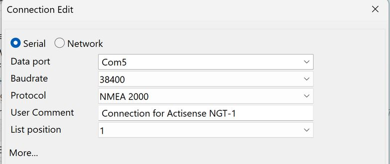
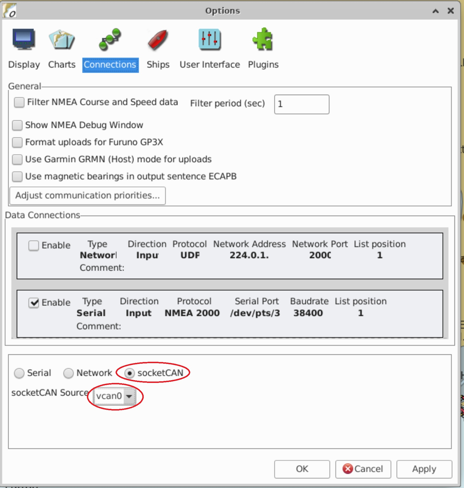
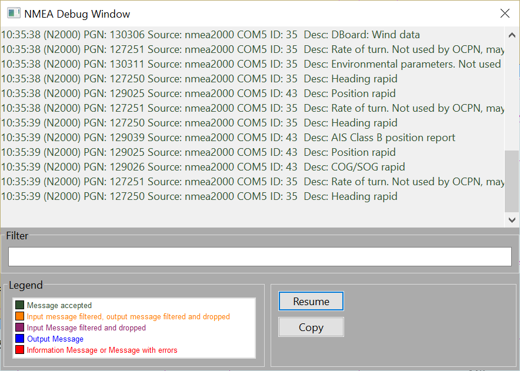

NMEA 2000
NMEA 2000 is a new communications standard developed by the National Marine Electronics Association (NMEA) that supercedes the previous NMEA 0183 standard. NMEA 2000 is based on the Controller Area Network (CAN) bus and transmits data at 250 kBps. The CAN bus is a mature technology and is widely used in automobiles, transport machinery and agricultural equipment.
NMEA 2000 uses a single "bus", terminated at each end with a resistor and with devices connected to the bus using T-pieces and drop cables. The bus design simplifies the cabling requirements on board a vessel and the high transmission rate provides sufficient bandwidth to accommodate all of the devices found on modern vessels. It can also be used for controlling autopilots, engine and tank level monitoring, controlling media devices and even switching circuits on and off!
Data is transmitted in a binary format using messages known as Parameter Group Numbers (PGN). Different PGN’s are used to encode different types of data, for example PGN 129025 encodes the vessel’s position (latitude & longitude), 129026 encodes the vessel’s course and speed over ground (COG, SOG), 129039 encodes an AIS Class A Position Report etc.

Schematic illustrating a NMEA 2000 network
OpenCPN is capable of integrating directly with NMEA 2000 Networks, using a number of adapters. Those that have been tested and are officially supported are listed below.
| Host Platform | Interface Device | Host Interfaces | NMEA-2000 Connector | Other Port Types |
|---|---|---|---|---|
PC or Tablet |
Actisense NGT-1 |
USB |
Micro-C |
|
PC or Tablet |
Actisense NGX-1-USB |
USB |
Micro-C |
|
WiFi-equipped platform |
Actisense W2K-1 |
WiFi 802.11b/g/n |
Micro-C |
|
PC or Tablet |
Yacht Devices YDNU-02 |
USB |
Micro-C |
|
WiFi-equipped platform |
Yacht DevicesYDWG-02 |
WiFi 802.11b/g/n |
Micro-C |
|
+ Linux |
any adapter that supports the SocketCAN interface |
|||
Rasberry PI |
PICAN-M, PICAN-M-SMPS |
HAT Plug-in Board |
Micro-C |
NMEA-0183 screw terminal |
Rasberry PI |
Waveshare 2-Channel Isolated CAN HAT |
HAT Plug-in Board |
screw terminal |
|
Rasberry PI |
PiCAN2 CAN Bus interface |
HAT Plug-in Board |
screw terminal, 9pin D-sub connector |
To configure a connection, go to Options→Connections→Add a New Connection.
For Serial/USB devices select a Serial device and ensure the correct COM/TTY port and baud rate are selected.

Similarly for network devices, ensure the correct IP address, protocol and port are selected. Refer to the section about connecting OpenCPN to networks for more detail.
On Linux, for SocketCAN adapters, go to Options→Connections→Add New Connection. Then select SocketCAN. The list of available adapters will be displayed in the drop down list.

Once you have successfully connected to the NMEA 2000 network, you can observe the received PGN’s in the NMEA Debug Window.

Serial-USB for Nmea 2000 Connections
USB-Serial for Nmea 2000 Connections are used to connect to various Nmea 2000 <–> USB/Serial Gateways:
-
Actisense NGT-1 NMEA 2000 to USB Interface: The Actisense NGT-1 is a versatile USB interface that allows bidirectional communication between your PC and the NMEA 2000 network.
-
Yacht Devices NMEA 2000 USB Gateway connects to your PC via a USB cable (a gateway connects different networks and protocols).
-
TwoCan Plugin and various Canbus Adapters?
- Windows - Kvaser Leaflight HS v2: A, Canable Contact, Axiomtek AX92903, Rusoku Twocan Marine
- Linux Software- SocketCAN interface:, PCAP packet capture format, Generic Log File reader